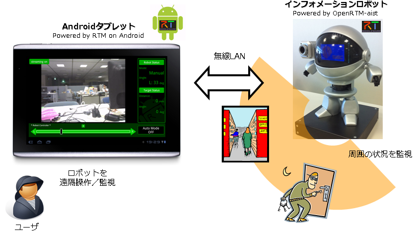
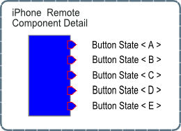
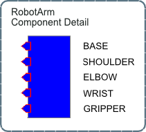

産総研オープンラボ2011
✏️ Edit this page on GitHub
#contents #clear
開催概要
- 会期：2011年10月13,14日
- 13日（木） 10：00～17：00（受付開始は9:30）
- 14日（金） 10：00～16：30（受付開始は9:30）
- 場所：
- 独立行政法人 産業技術総合研究所 つくばセンター
- 対象：
- 産業界、大学、公的研究機関等の皆様
- 主な当部門の展示：
- I-05 ロボット工学に関するフランスとの共同研究 [B会場]
- I-06 認証可能なロボットソフトウェア開発技術 [B会場]
- I-07 ロボットソフトウエア基盤：ＲＴミドルウエア [B会場]
- I-08 高速形状計測 [B会場]
- I-25 住宅のRT化 [B会場]
- I-26 生活支援ロボット安全検証センター [B会場]
- I-27 生活支援ロボットの国際安全認証意識調査 [B会場]
- I-28 上肢に障害のある人の生活を支援するロボットアームRAPUDA [B会場]
- I-29 ICFに基づく生活機能分析と支援ロボット開発 [B会場]
- I-30 人が指定した物を取ってくれるロボット [B会場]
- I-31 OpenHRI-SoarRTCを用いた学習的ロボット対話制御 [B会場]
- I-32 セラピー用ロボット「パロ」 [B会場]
- I-33 コミュニケーションを支援するアンドロイドロボット [B会場]
- I-34 ロボット動作振付統合ソフトウエア”Choreonoid” [B会場]
- I-35 農水産物加工向けの全周3次元形状計測システム [B会場]
- I-36 箱に詰め込まれた対象物のピックアンドプレース [B会場]
- I-37 過酷環境作業のための遠隔行動誘導システム [B会場]
- I-64 つくばモビリティロボット特区での産総研の活動 [C会場]
- I-65 ソフト連結車いすの柔軟なフォーメーション走行 [C会場]
- I-66 NEDOエネルギーITS推進事業 トラックの隊列走行の研究開発 [C会場]
- I-80 飛行ロボット用静音ジェットエンジン [B会場]
- 参加費：
- 無料
- 事前登録：
- ホームページ（http）からの事前来場登録（来場申し込み）とラボ事前予約が必要となります。
- 交通機関：
- つくばエクスプレス「つくば駅」（秋葉原から快速45分）より無料バスを運行予定
- 公式Webページ
展示内容
RTミドルウエア関連の展示は以下のとおりです。
- I-07 ロボットソフトウエア基盤：ＲＴミドルウエア 概要(PDF)(no_link) 見学予約(no_link)
- I-06 認証可能なロボットソフトウェア開発技術 概要(PDF)(no_link) 見学予約(no_link)
- I-25 住宅のRT化 概要(PDF)(no_link) 見学予約(no_link)
- I-31 OpenHRI-SoarRTCを用いた学習的ロボット対話制御 概要(PDF)(no_link)
RTミドルウエア：OpenRTM-aist
出展者
概要
RTミドルウエア（OpenRTM-aist）はロボットシステムを容易に構築するためのソフトウエアプラットフォームです。ロボットの機能要素（センサ、アクチュエータ、アルゴリズム等）を、RTコンポーネントと呼ばれる単位でモジュール化し、その組み合わせでシステムを構成します。ミドルウエアには、モジュール化とその再利用を容易にするための機能が備わっており、ロボットシステムの開発期間の短縮、コストの削減に貢献します。
RTコンポーネントは、言語（C++、Java、Python）、OS（UNIX、Windows、MacOS X等）を問わず作成・動作が可能で、異言語・OS上のRTコンポーネント同士をネットワーク経由で容易に連携させることができます。RTミドルウエア（OpenRTM-aist）のインターフェース仕様は、産総研が中心となって策定されたOMG（Object Management Group）の国際標準：RTC (Robotic Technology Component)仕様に準拠しています。OpenRTM-aistは今年のロボット大賞2007 ソフトウエア・部品部門優秀賞受賞ソフトウエアです。
特徴
- ロボットをモジュール単位で容易に構築するソフトウエアプラットフォーム
- モジュール化と再利用によって開発期間の短縮、コスト削減が可能
- ロボット特有なソフトウエア機能、異言語・異OS間で連携する機能を提供
OpenRTM-aistツール(RTCBuilder・RTSystemEditor)
出展者
産総研・知能システム研究部門・栗原眞二・安藤慶昭
株式会社グローバルアシスト・坂本武志
概要
現在、NEDO「次世代ロボット知能化技術開発プロジェクト(通称：知能化プロジェクト)」(2007-2011)において、ロボットシステム開発のための統合開発プラットフォーム OpenRT Platform が開発されています。このソフトウエアプラットフォームは、OpenRTMをベースとし、多くのツール群(ツールチェーン)によりロボットの開発効率の向上を目指しています。
旧OpenRTMツール(RtcTemplate・RtcLink)も、OpenRT Platform ツールチェーンに取り込まれ、様々な機能追加・改良を行った RTCBuilder・RTCSystemEditor として新たにリリースされました。
本展示では、新しいツールの新機能・改良点などをご紹介します。
特徴
- RTCBuilder
- わかりやすいGUIで、コンポーネントの設計をより簡単に
- C++、Java、Python、C#のひな型コードを自動生成
- RTSystemEditor
- RTコンポーネントシステムを簡単に設計・操作可能
- 新機能・オフラインエディタ

OpenRTM-aistシェルツール(rtshell)
出展者
概要
OpenRTM-aist用のシステム構築ツールセットです。コマンドラインで個々のRTコンポーネントやRTシステムが制御でき、使い方によっては以下のような事も可能です。
- 通信中のDataPortに対してデータを読み書きし、オンラインデバッグを行う
- シェルスクリプトでのコンポーネントの管理を行う
- コンポーネントAの起動が終わったことを確認してからコンポーネントBを起動する
- 送信データのログを記録して再生する
以下のような理由で今までRTSystemEditorを使用する事ができなかった方にお勧めします。
- ロボットに搭載されたコンピュータのリソースが少ない
- リモートからRTSystemEditorで接続することができない
{kind=link}
OpenCV を用いた画像処理システムのためのRTコンポーネント群
出展者
概要
画像処理ライブラリとして広く利用されているOpenCV の様々な処理関数をRTコンポーネント化する際に、データ型・インター フェース等のモジュール設計を検討し実装を行った。
特徴
- 画像処理ライブラリ OpenCV を利用
- 画像処理専用データ型の導入
- 画像の動的リサイズに対応
- 様々な画像処理機能の実装
プロジェクトページ
http://openrtm.org/openrtm/ja/project/opencv_rtcs
ARToolKitを用いた拡張現実システムのためのRTコンポーネント
出展者
概要
拡張現実 (Augmented Reality) を比較的容易に実現するためのソフトウエアツール キットとして注目を集めているARToolKitをRTコンポーネント化しました。
特徴
- OpenGLのFBOの仕組みを利用する事で、3Dレンダリング部分と表示部分を分離
- カメラ画像取得、3Dレンダリング、表示部分の分離により、再利用性と効率性が向上
- データポートのデータ型にCameraImage型を使用しているため、既存のOpenCVコンポーネントとの連携が可能
プロジェクトページ
http://openrtm.org/openrtm/ja/project/ARToolkit_DCI_AIST
協力展示
TECCO RTC
出展者
概要
株式会社ゴビ製のウェアラブルRFIDリーダ『TECCO』用RTコンポーネント. TECCOで読取ったRFIDタグのデータを受信し、他のRTコンポーネントで利用できるように出力します.
特徴
- 読取ったRFIDタグのデータを時刻印付にて出力
- BluetoothのCOMポートはコンフィギュレーションにて変更可能
- ハンディタイプのような持ち替え動作は不要で、自然な動作でICタグを読み取ることが可能
{kind=link}
Android版OpenRTM
出展者
概要
Android上で動作するOpenRTMを開発いたしました。これにより、スマートフォンやタブレット上で動作するRTコンポーネントを開発することができ、操作性が高く使い勝手の良いAndroidアプリケーションの特徴をRTCに取り入れることができます。
これまで、OpenRTMはLinux版やWindows版のみのため、大規模機器向けのものが多かったのですが、Android版ではより小型機器への応用の広がりを充分に期待ができます。また、OpenRTMの特長や性質は活かしていますので、ロボットやその他計測機器等の特有のソフトにもシームレスに対応できます。
本展示では、Android版OpenRTMで開発したアプリケーションをスマートフォンやタブレットでデモを行います。
特徴
- 広く一般に普及しているAndroid上で動く。
- スマートフォンやタブレット上で動くので、非常に手軽。
- タッチパネルを使うため、操作性や使い勝手のよさに非常に優れている。
本展示物の効果
Android版でございますので、一般の方々に強く広くアピールすることができ、普及に繋がる可能性があります。また、OpenRTMを使ったシステムのユーザーの課題等が確認することができ、今後の開発に向けてニーズを取り込んでいき、その顧客の方々にとって、良い開発物が出来上がり、カスタマイズや最適化等の展開も期待することができます。
| ※この開発は、独立行政法人科学技術振興機構の研究成果展開事業（先端計測分析技術・機器開発プログラム）による成果である。 | 開発課題名： 先端計測分析機器用共通ソフトウェアプラットフォームの開発 チームリーダー名： 大阪大学教授 佐藤了平 |
共通カメラインタフェースに基づくコンポーネント群
出展者
概要
現在，RTコンポーネントの作成において，コンポーネントの粒度やコンポーネント間のインタフェースのデザインは開発者に委ねられている．
多くのコンポーネントを創出するうえで，この自由度は有効であるものの，開発したコンポーネントの再利用を促進する場合，一定の基準のもとでのコンポーネントの開発と蓄積も合わせて重要といえる．
こうした背景のもとで，NEDO次世代ロボット知能化技術開発プロジェクトでは，開発したコンポーネントの再利用を加速するために，コンポーネント開発の基準となるコンポーネント間を接続するインタフェースの共通化についての議論を進めてきている．
本展示では，その一環として開発されてきた共通カメラインタフェースに基づくコンポーネント群の紹介を行う．
{kind=link}
タスク制御コンポーネントによる遠隔階層型ソフトウェアアーキテクチャ
出展者
概要
- 大規模複雑な遠隔ロボットシステムを簡単に運用、開発できる３層構造型のソフトウェアアーキテクチャ
- ユーザはモジュールの実接続を意識することなく、モジュールの動作フローを柔軟に構築できる（OperationLayer）
- タスク制御コンポーネントの階層管理システムにより、データ通信の高速化、高い透過性を維持、素早い動作制御を実現できる（ConnectionLayer）
- RTミドルウェアの特性を利用して、ハードウェア同士で柔軟なネットワークを組むことができる（HardWareLayer）
{kind=link}
効率的なRTシステム開発および運用のための汎用入出力・情報処理コンポーネント群
出展者
芝浦工業大学佐々木研究室・佐々木 毅 先生
中央大学橋本研究室
概要
RTコンポーネントによるシステム開発においてはコンポーネントやそれらを統合したシステムの動作テストが必要となります。運用段階においてもアクチュエータへの指令の生成、センサデータの処理や表示など、基本的な入出力や情報処理機能が求められます。そのため、様々なパターンの入力データを生成可能なファンクションジェネレータコンポーネント、コンポーネントの出力を視覚化するビューワコンポーネント、必要に応じた処理が可能な演算コンポーネントなど、システム開発および運用を効率化するための汎用的な基本コンポーネントの開発を行ってきました。本展示では、これらの紹介とデモンストレーションを予定しています。
{kind=link}
{kind=link}
Android版RTミドルウェア（RTM on Android）
出展者
概要
Android版のRTミドルウェア（RTM on Android）および、そのシステム事例を紹介します。 RTM on Androidを利用することで、Android端末とRTミドルウェアに対応したロボットシステムがシームレスに連携することが可能になります。システム事例では、当社が開発したインフォメーションロボットとAndroid端末を連携し、自動受付システムや防犯システムとして応用可能な遠隔操作・監視ロボットシステムを展示します。

OpenRTMによるiPhoneを使ったロボットアームコントロール
出展者
概要
普及されているiPhoneを使いロボットアームのコントロールを実現しました。Ｗｉｆｉ環境を利用し、一連の動作を記録し再生できるマクロ機能を搭載しました。
今後はこのＲＴＭを使った技術を進化させ、当社の制御系システム・ソリューションを更に発展させていくことを目的に取り組んでいきます。
特徴
- wifi環境下で操作可能~ （UDP通信を用いて通信している。必要な情報はIPとポートの2つ。）
- iPhoneを傾けるだけの直感的な操作が可能
- 一連の動作を自動で行うマクロ機能
- ロボットアームからのフィードバック（画面表記）を得て、遠隔操作を実現する。（予定）
{kind=link}
構成図


RTC-CANopen
出展者
概要
RTC-CANopenとは、安全バスシステムとして広く使用されているCANopenの特徴を取り入れた組み込み向けのRT-Middlewareです。
RTC-CANopenは、ネイティブバスであるCANを介して接続されるCANopenに準拠した各種デバイスと 汎用PC上のRTCと相互に接続することが可能となっており、通常のRT-Component同様に管理・操作する事ができます。
同時開発しているシステム開発向けのツールを用いる事で、RTC-CANopenを用いたシステム構築を簡単に行う事ができます。
また、RTシステムのPnP機能をサポートしており、柔軟なシステムの構築を実現しています。
本システムは、CANopenのライブラリにCanFestivalを利用しているためオープンソースとして利用できます。

DAQ-Middleware(DAQミドルウェア)
出展者
概要
DAQ-Middleware [1]はOpenRTM-aistを基盤とした高エネルギー加速器研究機構 （KEK[2]）や大強度陽子加速器施設 （J-PARC[3]）等の実験データ収集（DAQ）システムで使用するためのソフトウェアフレームワークである。
RTコンポーネントを拡張したDAQコンポーネントによる汎用で柔軟なDAQシステム構築を目指している。
現在、J-PARCの物質・生命科学実験施設 （MLF[4]）の複数の実験装置で稼働中のほか各種検出器テストベンチとして使用されている。
References
- http://daqmw.kek.jp/
- http://www.kek.jp/
- http://j-parc.jp/
- http://j-parc.jp/MatLife/ja/
{kind=link}
ZIPC-RT
出展者
概要
想定外な事象への対応モレに追われたことはありませんか？ 多数のセンサーから非同期に事象が発生するロボットは、 基本シナリオをカバーするだけでは品質確保できません。 ZIPC-RT は状態遷移表を利用することでロボット開発の 品質確保、生産性向上を支えます。
特徴
- 設計モレを防ぐ状態遷移表設計手法を採用
- 日本語の状態遷移表からＣコードを自動生成
- モデル上でリアルタイムに実機デバッグ／解析
- セルカバレッジで品質保証のエビデンスを記録
{kind=link}